↑
Градуировка МКС-АТ1125А
ЛИНЕЙНОСТЬ и ЭНЕРГЕТИКА
- Установить 2 дозиметра на поверочную дозиметрическую установку УДГ-АТ110 таким образом, чтобы центральная
ось
коллимированного пучка гамма-излучения установки была перпендикулярна оси дозиметра и пересекала его через
кольцевую риску на колпачке (допускается ориентация как по задней, так и по боковой стенке), а расстояние от
источника до центра детектора было выставлено по центру блоков на отметке + расположенной на колпачке
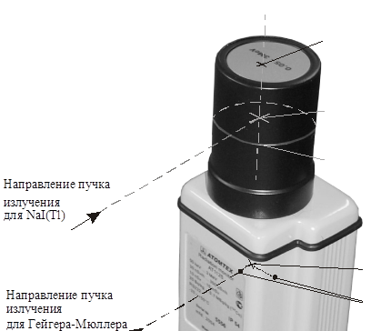
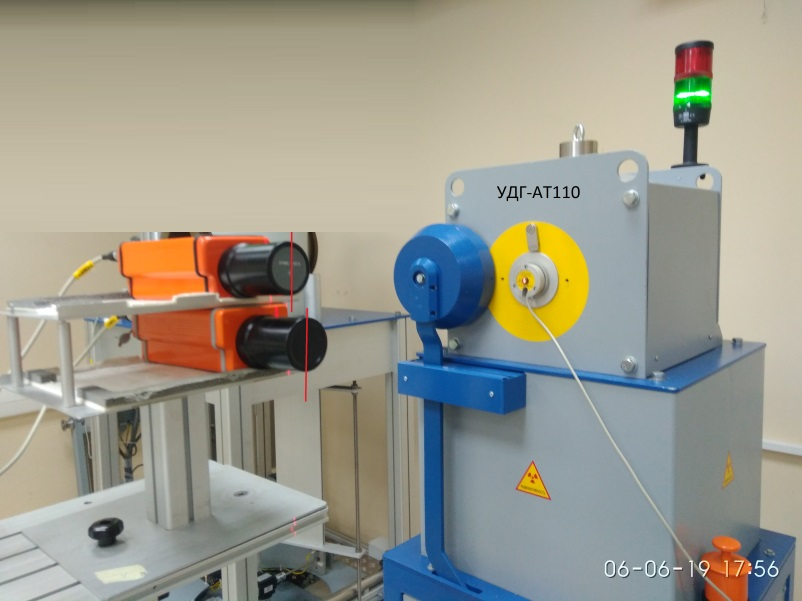
- На пульте управления КС-АТ110 нажать ЗАДАТЬ оцифровку в окне Х оцифровки

- Далее нажать Р1 и ОЦИФРОВКА

- Запустить ПО CalculationSources
- Подключить к ПК
- Запустить программу ATAS

- Записать номера каналов в электронный журнал градуировки
- Запустить ПО МКС_АТ1125_27
- Нажать Поиск
- Выбрать нужные для калибровки БОИ галочками в разделе использовать
- Выбрать Калибровка
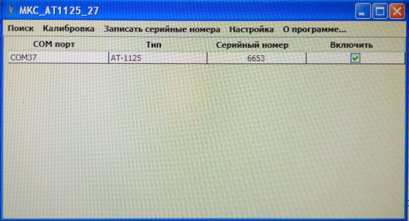
- Выбрать устройство (одно из 1125)
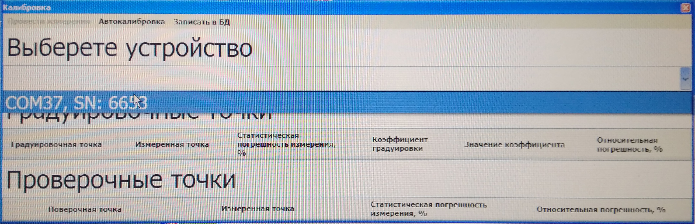
- Выбрать любую градуировочную точку и нажать Произвести измерение
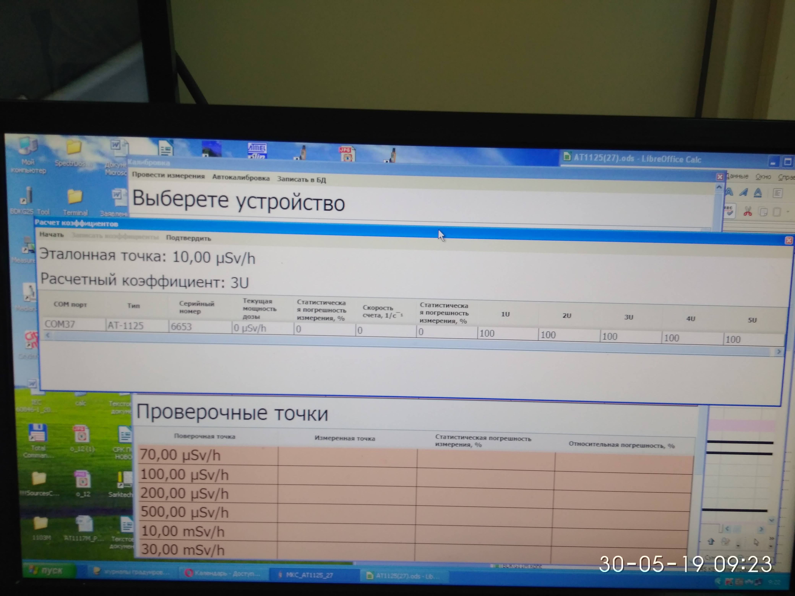
- Нажать Начать
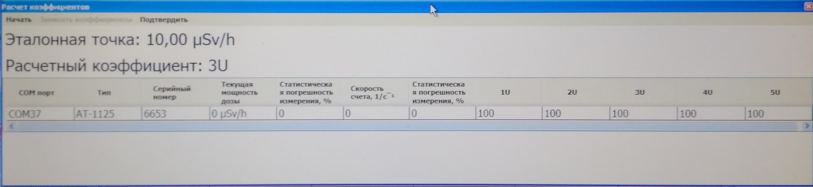
- Запустить ПО CalculationSources
- Рассчитать расстояние для H*(10)
- Установить источник 137Cs 7 мкЗв/ч
- Дождаться хорошей статистики 2-5 %
- Градуировать показания (с учетом фона) выставив коэф 3U ≈100
- Нажать Записать коэффициенты
- Выставить точку Am 30 мкЗв/ч скорректировать показания коэф 4U (д.б. СДН 100, Китай 100)
- Выставить точку Cs 240мкЗв/ч скорректировать показания коэф 5U (д.б. СДН 45, Китай 40)
- Перепроверить Am 30 мкЗв/ч при необходимости скорректировать из-за совместного влияния 4U и 5U
- Снять точку Am 2 мкЗв/ч
- Проверить 60Со 10 мкЗв/ч
- Снять ПСИ по Cs в точках 0,07 мк, 0,7 мк, 70 мк и 300 мкЗв/ч
- Данные переписать в журнал градуировки
+ЛИНЕЙНОСТЬ МКС-АТ1125А
- Установить 2 дозиметра на поверочную дозиметрическую установку УДГ-АТ130 таким образом, чтобы центральная
ось коллимированного пучка гамма-излучения установки пересекала красную отметку (допускается ориентация как
по задней, так и по боковой стенке), а расстояние от источника до центра детектора было выставлено по другой
красной отметке на корпусе
- Основной вариант расположения
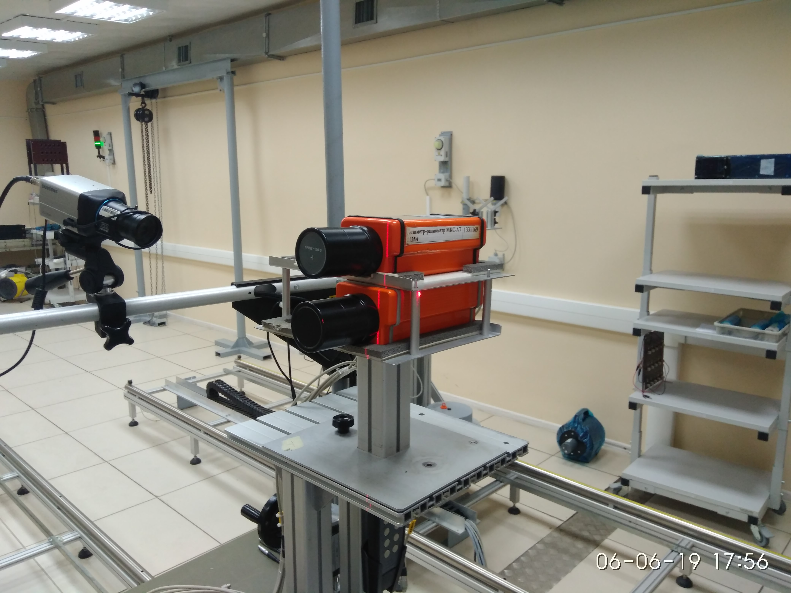
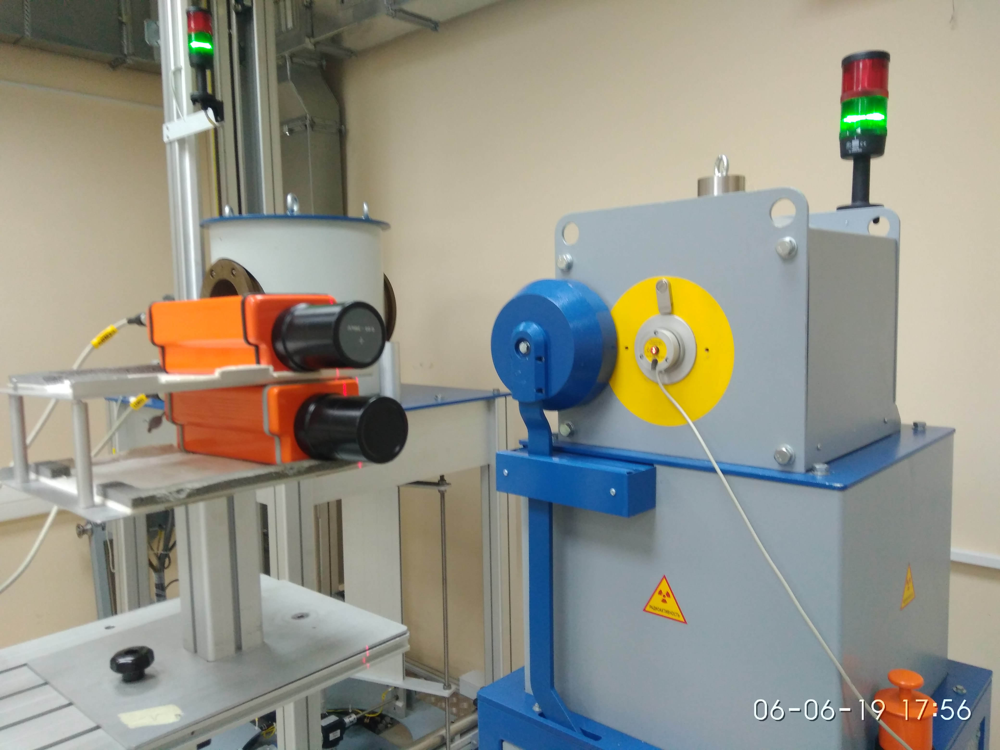
- Вспомогательный вариант ориентации
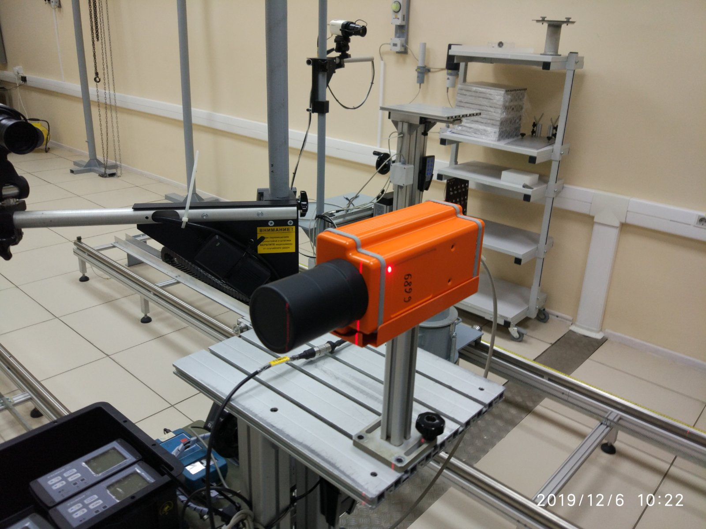
- На пульте управления КС-АТ110 нажать ЗАДАТЬ оцифровку в окне Х оцифровки
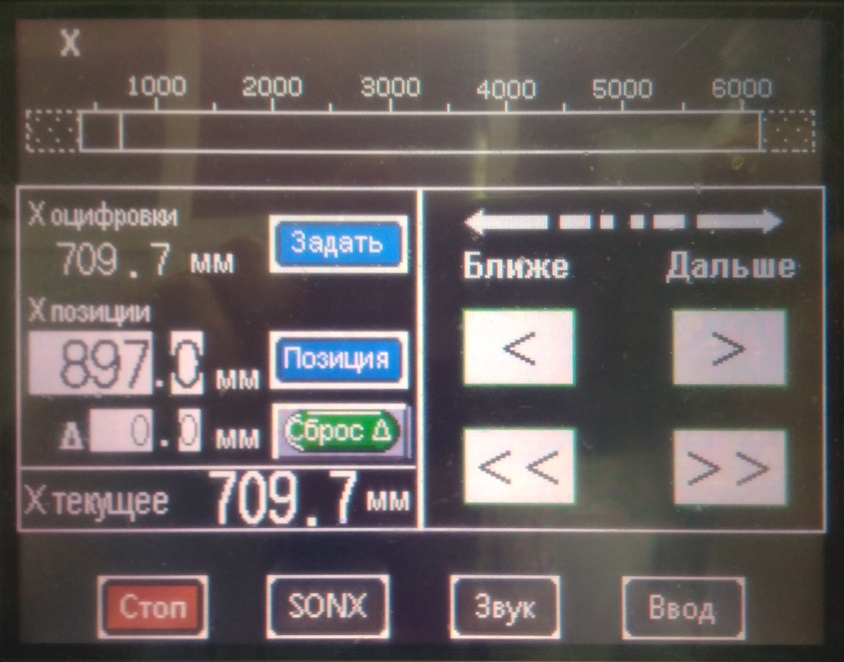
- Далее нажать Р1 и ОЦИФРОВКА
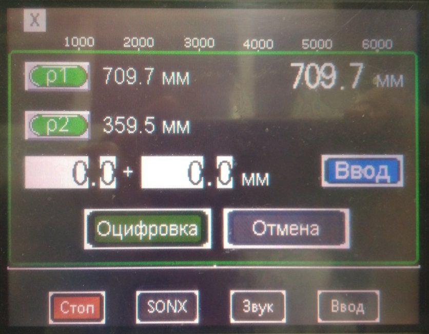
- Запустить ПО МКС_АТ1125_27
- Нажать Поиск
- Выбрать нужные для калибровки БОИ галочками в разделе использовать
- Выбрать Калибровка
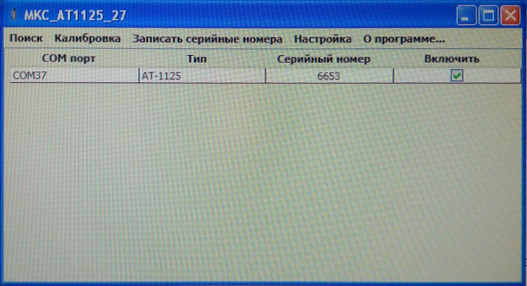
- Выбрать устройство (одно из 1125)
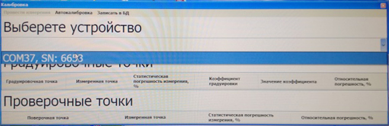
- Выбрать любую градуировочную точку и нажать Произвести измерение
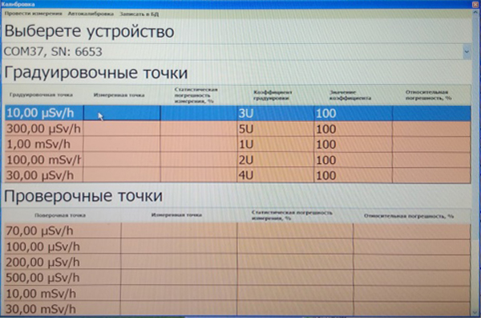
- Нажать Начать
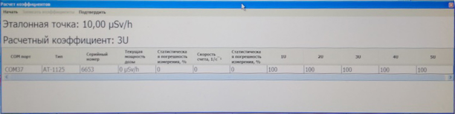
- Запустить ПО CalculationSources
- Рассчитать расстояние для H*(10)
- Установить источник 137Cs 1 мЗв/ч
- Дождаться хорошей статистики 2-5 %
- показания скорректировать коэффициентом 1U
- Установить точку 70 мЗв/ч
- показания скорректировать коэффициентом 2U
- Снять ПСИ в точках 7 мЗв, 70 мЗв/ч
- Данные записать в электронный журнал градуировки